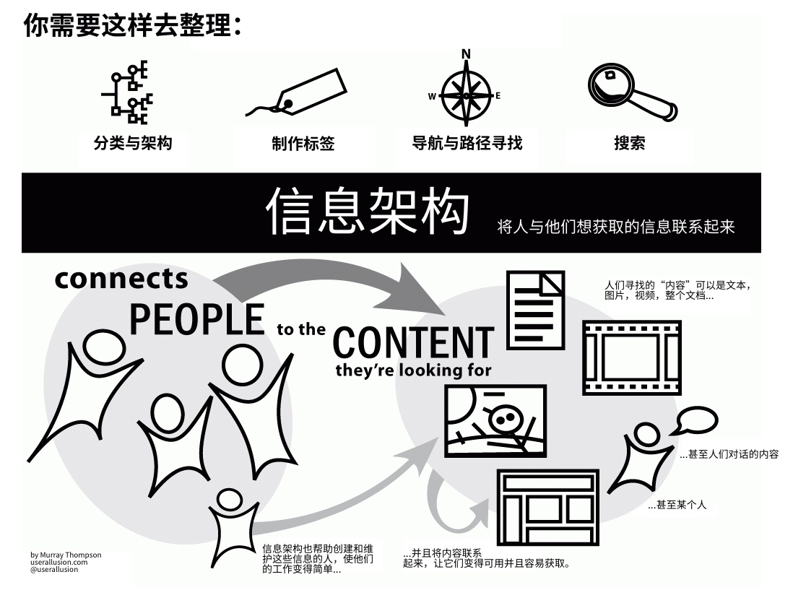

MoClippings #12 人工智慧與機器人的時代
發刊日 : 2016/09/17 - 2016/09/23
資訊知事
- 你以為只是記帳？小心 App 的個資安全！ - INSIDE 硬塞的網路趨勢觀察
- Good Practices for Capability URLs - W3C 針對不需要登入的特定網址做的規範，例如 DropBox 的 reset password 或 APP 跳轉登入網站等。
- Common Bot Misconceptions – Slack Platform Blog – Medium - 關於機器人的共同必要知識
- Bots are AI
- Bots are easier to build than apps
- Text is the only way to interact with bots
- Bots are the only way to integrate services into chat apps
- Bots are going to replace apps/services
- Bots will make humans redundant
- All bots are born the same
- Bots 不一定需要 AI 人工智慧。
- Bots 不一定比 APP 好建置。
- Bots 不只有文字介面交談
- Bots 不只有可以整合其他服務進來
- Bots 正在取代服務或 APP ? (不， Bots 自己本身也是種服務)
- Bots 正造成人員被裁減？(不，機器人的確取代了部分工作，但也會產生新的工作)
- Bots 都來自相同的產出？(不，各個不同的領域都有其自己的機器人)
平台與服務
- Notion – Docs, wikis, tasks, seamlessly in one. A unified workspace for modern teams. - 工作管理、知識共享的服務平台
- 機器人 Bot 們：
- Conversational UX Platform for Bots, Apps, Devices, Services - Api.ai - 製作機器人服務的平台
- x.ai智慧會議助理
- clarke.ai自動會議紀錄助理
- Wonder Bot筆記助理
- Apple –> Siri + Turi
- Facebook –> Messenger Platform + Wit.ai
- Google –> API.ai
- Amazon –> Alexa + Angel.ai
- Microsoft –> Bot Framework + luis.ai
- 製作個人簡歷的工具：
技術知事
專案管理
- 敏捷專案開發精神 | Ruddy Lee 分享空間 - 這篇文章分享了許多重要的敏捷專案開發圖示
開發心法
- 那些年提交AppStore審核踩過的坑- 簡書
- 1、未遵守蘋果iOS APP數據儲存指導方針。
- 2、未提供測試賬號
- 3、跟相關硬體搭配使用的app，未提供展示影片。
- 4、跟相關硬體搭配使用的app，未提供PPID.(Product Plan ID )
- 5、使用了背景定位服務，但是沒有具體說明原因
- 6、上傳的螢幕快照跟App實際使用的畫面相差太遠
- 其他：
- 使用未公開的API被發現
- 使用和系統接近的圖標
- 界面太醜或者交互太過複雜
- 不穩定，容易崩潰
- 跟應用市場上其他App太過雷同
- App內有檢測更新
- 出現第三方操作系統的名字或圖標
- 測試不充分，某些App聲明支持的操作系統版本有相容問題
- 10 Modern Software Over-Engineering Mistakes – Medium - 現代軟體工程師的過度工程(過度設計)
- Engineering is more clever than Business
- Reusable Business Functionality
- Everything is Generic
- Shallow Wrappers
- Applying Quality like a Tool
- Overzealous Adopter Syndrome
–ity
- In House “Inventions”
- Following the Status Quo
- Bad Estimation
- 恰如其分的 MySQL 設計技巧
- How Dropbox securely stores your passwords | Dropbox Tech Blog - 原始明文密碼先用 SHA512 作 hash，再用 bcrypt（每個帳號使用不一樣的 salt；strength 10，不快，大概100ms，不好暴力破解），再用 AES256 加密（用一個不存在資料庫的 secret key）
- Marcelo Cure: Software Engineer: REST anti-patterns - REST 設計的反模式
- URI not very RESTful
- Using wrong HTTP methods
- Hurting Idempotency
- Ignoring status codes
- Ignoring hypermedia
- More on HATEOAS
- Ignoring MIME types
-
- 什麼是信息架構？
- 用戶瀏覽我們網站的過程是怎樣的？
- 這個應用怎麼樣幫助用戶分類他們的信息？
- 這些信息是怎麼樣呈現給用戶的？
- 這些信息有沒有幫到客戶，並驅使他們做出決定？
- 通用方法
- 圖書館學
- 認知心理學
- 建築學
日常工作
- 用戶研究與分析
- 導航和架構層級創建
- 線框圖
- 製作標籤
- 分類學和元數據
- 數據建模
- 
可以關注的大神
- Abby Covert
- Andrea Resmini
- Andrew Hinton
- Christina Wodtke
- Dan Klyn
- Donna Spencer
- Eric Reiss
- Jesse James Garrett
- Louis Rosenfeld
- Nick Finck
- Peter Morville
- 常用工具
- Omnigraffle - Omnigraffle是Omnigroup的圖表和線框套件。
- Axure
- MindManager - MindManager中方便的拖放功能，信息架構師可以方便快捷地將靈感表達出來，然後將這些想法組織成網站地圖，並以此來闡述架構思路。
- XMind - 允許信息架構師將地圖保存到Evernote。他們也提供了地圖庫，用戶可以分享他們完成的工作或看到其他人的工作。
- Treejack - Treejack可以讓信息架構師輸入站點層次結構，建立任務，然後招募用戶。然後他們可以看到自然的測試結果，也可以共享或下載結果。
- 知名會議和協會
- 相關書籍
- Ambient Findability: What We Find Changes Who We Become / Peter Morville
- A Practical Guide for Information Architecture / Donna Spencer
- How to Make Sense of Any Mess / Abby Covert
- Information Architecture: An Emerging 21st Century Profession 1st Edition / Earl Morrogh
- Information Architecture: For the Web and Beyond / Louis Rosenfeld, Peter Morville & Jorge Arango
- 什麼是信息架構？
- 閒談軟體架構：休息時間 « Spirit’s development notebook - 關於 API 設計時需要考量的事情及一些標準與參考。這篇文章寫的好仔細，很硬，但很值得仔細看完。
- Architectural Styles and the Design of Network-based Software Architectures
- Wikipedia 上對 WWW 的解釋
- REST API Versioning
- Resource API Naming 最佳實務
- Martin Fowler 在《Richardson Maturity Model - steps toward the glory of REST》
- level 0 就是什麼規範都沒有，或是把 HTTP 當成 RPC 使用的階段
- level 1 定義 resource，讓系統能以 resource 描述狀態
- level 2 善用 HTTP 動詞 (方法：GET、POST、PUT 和 DELETE)
- level 3 能以超媒體的方式控制流程，或是從 response 中的資訊可以知道接下來可以做什麼
- JSON 格式的 API Resource 描述標準：
- 前端自动化测试探索 - FEX
- 自动化的收益 = (迭代次数 全手动执行成本) - (首次自动化成本 - 维护次数 维护成本)
- 可测试方向
- 界面回归测试
- 功能测试
- 性能测试
- 页面特征检测
PHP Library or 工具
- Canvas - Simple, Powerful Blog Publishing Platform - 使用 Laravel 所建置的 OpenSource Blog 系統。
- 10 Fresh Laravel Packages – September 2016 - Larademy Daily
- Orderable https://github.com/ZigaStrgar/orderable
- Laravel Schema https://github.com/thedevsaddam/laravel-schema - 繪畫 Laravel Database Schema 的工具
- Pretty Routes https://github.com/garygreen/pretty-routes - 讓你的 Route 更容易看懂的工具
- Schedule Overview https://github.com/michelecurletta/laravel-schedule-overview - 方便看懂 Laravel Schedule 的工具
- Roles/permissions for Laravel 5.3 https://github.com/GeniusTS/roles - 建立使用者角色及權限的套件
- Beautymail for Laravel 5 https://github.com/Snowfire/Beautymail - 送出好看的電子郵件
- CreatedBy https://github.com/malhal/Laravel-CreatedBy - 在 Schema 欄位中，加上建立者是誰、修改者是誰的套件。
- Laravel Blade Function https://github.com/balping/laravel-blade-function - 加強 Blade Function
- Env Sync https://github.com/JulienTant/Laravel-Env-Sync - Laravel 環境參數同步工具
- Promocodes https://github.com/zgabievi/Promocodes - 建立 Promocode 的工具
後端
- Tuning NGINX - via @codeship | via @codeship - Nginx 的調教技巧
- security-guide-for-developers/security-checklist.md at master · FallibleInc/security-guide-for-developers - 資訊安全檢查表
- 10 個原因我喜歡用 Swagger spec 來定義新開發的 RESTful APIs. (自 CodeTengu Weekly 碼天狗週刊 - Issue 58 我審查了自己的程式碼，得到了一份更好的程式碼跟更好的自己 整理)
- 它可以幫我產生 18 種語言 generator.swagger.io server 端樣板程式
- 它可以幫我產生 34 種語言 generator.swagger.io client 端樣板程式
- 它可以馬上生成線上可執行的 API 文件, 例如 petstore demo 還有 APIs.guru
- 它可以輸入 SoapUI 建立測試案例
- 它還可以用 swagger-editor 直接在線上編輯 Swagger spec
- 它跟 OpenAPI 合併, 應該會變成業界標準
- 它有非常多的開源軟體及工具能跟 swagger 進行 整合
- 而且它本身也是開源 github.com/swagger-api
- 喜歡 yeoman 產生器的, 也可以用 generator-openapi-repo 產生程式碼
- 還有跟 docker hub 一樣, 它也有 swagger hub, 我還有理由不用 swagger 嗎?
前端
- 大型前端專案的架構 – Medium
* - Building Resizeable Components with Relative CSS Units | CSS-Tricks - 作者示範了許多 responsive 的例子。 利用 % 和 em，讓你的 UI 元件成比例
- 使用 px 作為尺寸單位，會難以維護。
- 使用 em 可以讓所有事情都跟著 font-size 成比例。
- font-size 使用 px 會造成不好的 accessibility，因為使用者可能會改預設的字型大小。
- ECMAScript 6入门 - ES6 學習免費線上電子書
- Effective前端1：能使用html/css解决的问题就不要使用JS – 会编程的银猪 - 文章中提到以下幾個改以純 html/css 直接呈現效果的方案：
- 導航高亮
- 鼠標懸浮時顯示
- 自定義 radio/checkbox的樣式
- 多列等高
- 需要根據個數顯示不同樣式
- 使用表單提交
- 自動監聽 Enter 事件
- React 技术栈系列教程 - 阮一峰的网络日志
- 非同步程式碼之霧：Node.js 的事件迴圈與 EventEmitter - E.E.RHAPSODY
-
- 為什麼需要自動化測試
- 自動化的收益 = 迭代次數 全手動執行成本 - 首次自動化成本 - 維護次數 維護成本
- 可測試方向
- 界面回歸測試
- 功能測試
- 性能測試
- 頁面特徵檢測
- 業界開源工具
- 界面回歸測試
- 像素對比
- PhantomCSS - PhantomCSS
- Casperjs - 截圖
- ResembleJs - 圖像對比分析
- 如何測試多瀏覽器
- 響應式頁面測試
- BackstopJS - 通過PhantomJS、capserJS等工具在不同尺寸下截圖然後根據resemberJS進行像素比對判斷是否正常
- 像素對比需要注意的問題
- 不建議對網站所有頁面進行測試 這只會導致很容易出現告警，但不一定是錯誤。
- 推薦測試區域而不是整個頁面
- 隱藏動態區域
- 界面對比只是一個環節，需與其他測試相結合 沒有銀彈，合理結合才是關鍵
- dom結構對比
- 像素對比
- 用戶操作測試
- Phantomjs
- CasperJS
- PhantomFlow 操作對比測試
- 性能測試
- 基於PhantomJS的工具 Phantomas
- 界面回歸測試
- 為什麼需要自動化測試